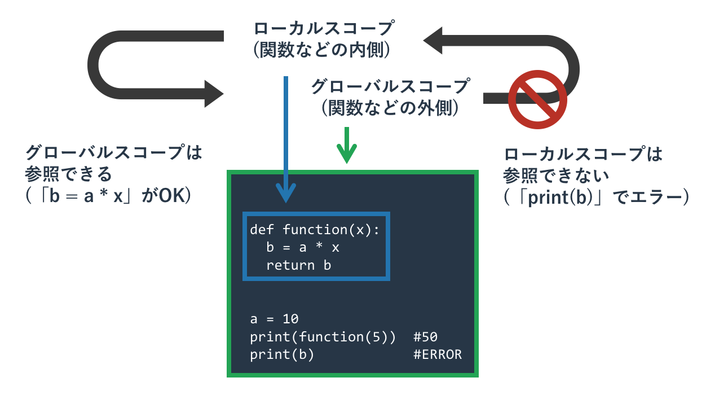
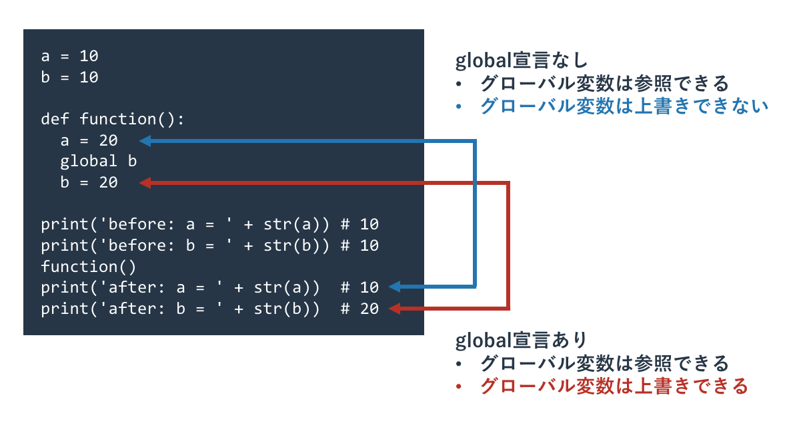

名前空間
本記事の内容
概要

Pythonの変数や関数を宣言しても、それをどこででも利用できるわけではありません。 たとえば、関数の中で宣言した変数は関数の外で利用することはできません。
関数や今後学ぶクラスなどは「内部で使っている変数名や関数名(関数のなかの関数)が、 その内部でだけで通用する」というルールを持っています。 この仕組は「名前空間」と呼ばれています。
名前空間があるため、関数Aの内部にある変数abcと、関数Bの内部にある変数abcは別物となります。 何十万行もある複雑なPythonのプログラムでこの変数名は関数Aで使っているから、 関数Bでは使えない(上書きしてしまうから)などといったことは考える必要はありません。
名前空間は入れ子構造になっていて、この名前空間の一番外側のことを「グローバル」と呼んでいます。 そこで定義された変数は「グローバル変数」と呼ばれています。 一方、関数の内側の変数などはそれと比較して「ローカル変数」と呼ばれます。
名前空間の入れ子の内側は外側の変数や関数は参照できます。 つまり、関数の中では関数の外側にあるグローバル変数が持つ値を利用できるということです。
ただ、グローバル変数に値を代入して上書きするには「global宣言」が必要となります。 もしglobal宣言がなければ、同じ変数名を持っていたとしても、それはローカル変数として扱われます。
ローカル変数
関数内では引数も含めて変数を宣言できます。
def function(x): a = x * 2 return a print(function(5))
10
これは与えられた引数を2倍して返すという単純な関数です。 内部に引数(関数内部では変数と同じ扱い)であるxと変数aが存在しています。
実はこれらの関数内で使われている引数や変数は、関数の外からはアクセスできません。 関数の呼び出し前(関数が実行されていないから変数が宣言されていない)であろうと、 関数の呼び出し後であろうと、関数内の引数や変数にアクセスするとエラーになります。
具体的には以下のようなエラーとなります。
def function(x): a = x * 2 return a print(function(5)) print(a)
Traceback (most recent call last):
File "sample.py", line 6, in <module>
print(a)
NameError: name 'a' is not defined
関数や今後学ぶクラスのメソッドの中で定義する変数は「 ローカル変数 」と呼ばれており、 その中でしか通用しない変数です。 同様に関数の中で定義された関数なども、関数の外からアクセスできません。
このようなどこからどこにアクセスできるかという仕組みは「 名前空間 」と呼ばれています。 この仕組は不便なように感じるかもしれませんが、大きなプログラムを書く際は大事な性質です。 たとえば関数が100個あったときに、名前空間という仕組みがなければ、 ある関数内で他の関数の変数と変数名が重複しないように気を配る必要があります。 一方、関数ごとに内部の変数が独立していれば、他の関数がどのような変数を持っているかを気にする必要はありません。
グローバル変数の参照
関数内の変数に関数外からアクセスすることはできませんでした。 ただ、その逆はできます。
a = 5 def function(): print(a) function()
5
Pythonの名前空間は入れ子状になっています。 つまり、外の名前空間の中に、中の名前空間が入っているということです。 この例でいえば一番外側の名前空間に関数function()の名前空間が入っています。 この一番外側の名前空間は「 グローバル 」と呼ばれています。
名前空間の内側にはアクセスできませんが、外側にはアクセスできます。 そのため、先ほどのようにグローバルに属する処理が関数内の変数を参照できず、 グローバルの内側にある関数はグローバルにある変数にアクセスできるのです。
このグローバルの名前空間にある変数は「 グローバル変数 」と呼ばれています。
グローバル変数の上書き
Pythonは関数内などの内側の名前空間から、グローバル変数を上書きすることが特別な宣言なしにはできません。 関数内でグローバル変数を上書きしようとすると、同じ名前のローカル変数が作られて、それに代入されます。 つまりグローバル変数の値はそのままです。
a = 5 def function(): a = 10 print('function(): ' + str(a)) print('global: ' + str(a)) function() print('global: ' + str(a))
global: 5 function(): 10 global: 5
上記のプログラムではグローバル変数aに5が代入されています。 関数function内で同名の変数aに10を代入すると、関数の内側では変数aの値が10になり、 関数の外側では変数aの値が5のままです。
これは関数の外側にある変数aがグローバル変数であり、 関数の内側の変数aは「代入されている」ことでローカル変数になっているため、 両者が別物だからです。
関数内でグローバル変数を上書きしたい場合は「 global文 」を使って、 「この変数はグローバル変数です」と宣言する必要があります。
以下に先ほどのプログラムを少し変更して、関数の中でglobal宣言をするようにしました。
a = 5 def function(): global a a = 10 print('function(): ' + str(a)) print('global: ' + str(a)) function() print('global: ' + str(a))
global: 5 function(): 10 global: 10
プログラムの実行結果をみると、関数の実行後にグローバル変数aの値が関数内で代入された10となっています。 これは関数の中で代入される変数がローカル変数(デフォルト)からグローバル変数(global宣言が必要)に変わったからです。

不必要な副作用を避ける
関数などを動かすことで「外の世界に影響がおよぶ」ことを「 副作用 」と呼びます。 リスト長を調べる関数len()は外の世界に影響がないため、副作用のない関数です。 一方、引数をコンソール出力する関数print()は「コンソールに出力する」という外の世界への影響があるため、副作用のある関数です。
よいプログラムを書くには「余計な副作用を避ける」という経験則がプログラミングの世界にはあります。 print関数の副作用は自分が意図して実施しているため問題ないでしょうが、 先ほどのglobal文を使った「関数内からの関数の外の世界の変更」はあまり推奨されない副作用です。
複雑なプログラムを書く場合は多数の関数を定義して、多くの場所でそれらを呼び出します。 呼び出した関数が「引数を受け取る」「返り値を返す」ということ以上をしなければ、関数を使っても他の箇所に影響はおきません。 一方、global文を使って内部でグローバル変数を変更すると、グローバル変数の値が上書きされてしまいます。 もし関数を使う人がそのことを意識していなければ、グローバル変数の値はおそらくプログラマが認識しているものと違った値になります。 こういった効果が数百の関数にあれば、なにがなにをどう変えるのかということを慎重に調べないとプログラムが書けなくなってしまいます。 そのような複雑に絡み合ったプログラムは開発効率が悪いため、不必要な副作用は避ける習慣をつけてください。
グローバル変数を更新するにしても、必ずしも関数の中でglobal文を使う必要はありません。 それよりも、引数でグローバル変数を受けとり、返り値をグローバル変数に代入するようにしてください。
以下の2つのプログラムは共にグローバル変数aに5を追加する関数ですが、 副作用がないという点で後者のほうが優れています。
a = 5 def add5(): global a a += 5 print(a) add5() print(a)
a = 5 def add5(x): x += 5 return x print(a) a = add5(a) print(a)